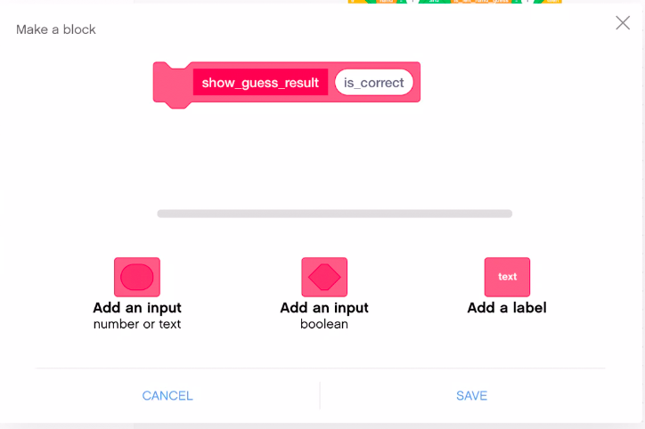

Coding the Guess the Hand game
{kind=link}
For this program, you’ll just need the SPIKE Intelligent brick. We’ll use the left and right buttons on the brick as “hands”.
Programming Exercise
Let’s code the Guess the Hand game, step by step. Follow the instructions closely and code the game as indicated so you can follow later steps in this lesson that make changes. It is ok to change variable or my block names slightly so they are easier to type. E.g. Underscores (_) are harder to type on iPad than dashes (-), but don’t change the names too much so you can still follow the lesson easily.
My blocks
Define the following my blocks: we’ll fill in the code for each in later steps. The start stack will call this first set of my blocks.
initialize_variables: Will initialize all variables and lists.game_loop: The main logic of the game.show_winner: Messages and sounds for the game winner.
The my blocks above will call these my blocks to implement various game functions:
pick_random_hand: Chooses what hand the “coin” is in, i.e. what hand the player must guess to win a point.choose_next_player: If player 1 just selected, this makes it player 2’s turn and vice versa.show_guess_prompt: Shows a message prompting the next player to make their guess now.check_guess: Did the current player correctly guess the hand? Also shows messages and plays soundsshow_guess_result: Shows messages and plays sounds for a correct or an incorrect guess. This my block will use a technique of using an input namedis_correctto tell the block to print different messages and play different sounds.update_score: If the current player guessed correctly, give them a point.
Create the my blocks and code your startup stack. To create a my block, click the Make a Block button in the brick palette. A dialog will appear where you can choose a name for the block (always use a descriptive name for what the code will do).
{kind=link}
For most of the blocks here, you only need to type in the names provided in this lesson by typing over block name and click SAVE. Repeat this for each of the my blocks here.
The only my block that is different is show_guess_result. It will take an input (also called a “parameter”). An input to a my block is like a variable, that it will use to show either a success message and sound, or a failure message and sound. To define the input, click the Add an input button. Then set the name of the parameter to is_correct. We’ll show how is_correct is used when we add code to the my block later.

{kind=link}
Your programming canvas will look different as the my block stacks will added in a jumbled order. You can right click or long click on the programming canvas and select Clean up Blocks and it will arrange things better. You’ll still want to move the blocks to make room for adding code to the stacks as you implement each one.
{kind=link}
The app displays blocks related to each my block in two places:
- The block palette (where the other available programming blocks are): You drag the my block from the block palette so you can use the my block’s code in your program.
- The programming canvas: the app adds
definestacks to the programming canvas. In those stacks we’ll add code that implements the my blocks (make the my block do something useful). We’ll add that code in later steps.
Implement the when program starts stack
{kind=link}
Implement the start stack as shown.
Right now, your code does nothing as the my blocks have no code. We’ll start implementing the my blocks next.
Define and all variables and lists
We need to define the following variables and lists. Click Make a Variable or Make a List as required:
number_of_players: Set to 2, indicating this is a two-player game.player_scores: A list containing both player’s scores. Item 1 is player 1’s score and item 2 is player 2’s score.player_num: The number of the current player, 1 or 2. The program uses this for messages and to look up the player’s score in theplayer_scoreslistis_left_hand_guess: When 1, this indicates the player guessed the left hand.is_right_hand_guess: When 1, this indicates the player guessed the right hand.hand: The hand that has the coin.is_correct_guess: Will have value 0 or 1 if the current player got the guess right in the current round. This variable isn’t strictly needed but makes the code easier to write and understand.winning_player_num: The number of the player that won. The code uses this after the game loop to display a message about the winning player and to show their final score.
Define the variables and lists as shown.
{kind=link}
{kind=link}
Now implement the initialize_variables my block stack as shown. This initializes most of the variables and lists we have defined to known values for use by the rest of the program. The program initializes the remaining variables right before it uses them because the game loop needs to reset them every time it runs.
{kind=link}
initialize_variables stackGame Loop
The game loop is the main logic for the program. We’ll implement the game_loop my block and some related my blocks that help it do its job. Start by writing the code for game_loop.
{kind=link}
Next we’ll add events to detect when the player guesses a hand, and implement pick_random_hand to pick the hand that has the ‘coin’. Here were using two touch sensors on port 1 and 2 as “hands”.
{kind=link}
Then implement show_guess_prompt so the player knows when it is time to make a guess.
{kind=link}
show_guess_promptNote in show_guess_prompt we’re using a join text . It joins text (or numbers) together so we can make longer messages. So here were are joining the text “player” with the current player number resulting in text “P1” or “P2” for “player 1” and “player 2”, respectively. Often you’ll want to add a space (blank) to the beginning or end of one of the text inputs or the other, or the text would run together like “player1”. But here we are just use “P1” and displaying long messages in the SPIKE Intelligent brick LED display just slows down our game play.
Because of the limitations of the display, we also light the bottom row of LEDs so they are just visible, and then light another LED brightly which indicates which player’s turn it is to guess.
Now implement check_guess and show_guess_result. Remember that show_guess_result requires an input, and we’ll pass the value of the is_correct_guess variable. Inside of show_guess_result, we can use the is_correct input as a variable to get the value of the input. As coded, is_correct will be set to the same value as is_correct_guess during this part of the program.
Passing variables is another way to improve the readability of your programs. If a my block only uses its inputs, instead of other variables defined in the program, it can make your program easier to understand. Any stack in the the SPIKE App program can use its variables; other programming languages call these “global variables”. Because the stacks can’t control when global variables change, it can lead to errors. The inputs to my blocks can reduce these kinds of errors. Also a my block cannot change its inputs, as one my block changing the value of a variable another my block or stack depends on could be a source of bugs.
To use is_correct within the block, instead of going to the block palette as you do for other variables, click and drag is_correct from its location in the define block. Then it works like other variables.
{kind=link}
check_guess and show_guess_resultshow_guess_result’s use of an input isn’t required here as we could have used the is_correct_guess variable directly as we do in other stacks. But it is a good practice we wanted you to see for your future programs.
For the brick button light, use green for a correct guess, red for an incorrect guess, and then set the light back to white at the end of the my block.
In update_score we’ll update the player’s score in the player_scores list. This stack makes use of a replace item block to update the player’s score in the player_scores list. And then we also have to find the current score and add one point to it. So there is a lot happening in the replace item block here.
{kind=link}
update_score and choose_next_playerThat’s the main game logic! We’re almost done coding the game. We just need to code the final my block that the start stack calls at the end of the game.
Report the Winner and Stop the Program
Now we just need to show messages and play some sounds for the winner of the game. Implement show_winner.
{kind=link}
show_winnerThat’s the last of the code. We already coded the start stack to wait for a couple of seconds (to give you players a chance to read the game winner messages), and then stop the program.
Double check that your program looks like the following. Review the previous steps, if necessary.
{kind=link}
Play Time
Take some time to play the game. Watch for any problems and make fixes so the program appears as shown at the end of the previous exercise.
Improving the Game
The game as coded is fun and functional, but it has areas for improvement.
Player 1 has a slight advantage as they are always first to guess. Let’s change the program so Player 2 sometimes gets a chance to guess first.
- Define a My Block named
select_random_player. - This my block will pick a random number between 1 and 2, the player number who gets to start the game.
- Assign that value to the
player_numvariable. - Add a call to
select_random_playerto yourwhen program startsstack, after the call toinitialize_variables.
You may have noticed, or will be surprised by, that it is possible for a player to cheat the game.
- Find out what the cheat is.
- Look at the code and try to figure out why the program allows cheating to occur.
Another problem is that the program depends on a tight “spin loop” where it checks if a guess has occurred. While this works, loops like this can consume a lot of processing and battery power due to the checking the condition hundreds or thousands of times per second. This is similar to how annoyed adults get when a young child (or maybe you) asks them during a car trip “are we there yet?” over and over. The adult might have a hard time paying attention to the road to deal with the questions, or they’ll get tired of answering repeatedly. A spin loop is like that annoying, but adorable, child and its a common cause of programs being slow or inefficient.
Let’s work on fixing the cheating and performance problem in this code.
- Add some code in the
check_guessloop to determine if the player cheated. Indicate that the program detected a cheat by displaying something, using a light, playing a sound, etc. For now, let the cheater get the point, we’ll fix that in a later step. - So we should avoid spin loops. The one second delay in our loop helps a bit. But in this case it actually helps allow a player to cheat as well. Try changing the “spin loop” to a wait block to detect when a player has made their guess.
- This should reduce the occurrences of cheating, but it will not prevent it. Why does this improve things?
- Add more code to prevent cheating. There are a couple of ways to do this, but you’ll probably start by adding code in
check_guess. We could abort the program when it detects the cheat, but we want the game to continue and not give the cheating user that point (you can even deduct points if you want).
Bonus Challenges
At this point, you should have a fun and fair game to play with your friends. If you have time, here are some other enhancements you can make to the program. You may implement these in whatever order interests you.
- Change the program to be easier to use by showing the score for both players on the guess screen. That way players don’t have to keep track of their score in their heads.
- Change the program to support more than two players (Hint: the program is already coded for this, you’ll need to make a simple tweak, unless you’ve significantly changed the program in previous steps. This demonstrates the power of using data structures like lists.)
- Currently, the program uses the
is_port_1_guessandis_port_2_guessvariables to track the player’s guess. Replace both of these variables with a list of two items.- How does this simplify (or complicate) the game program?
- Instead of exiting the game, ask the players if they want to play again. Add code to restart the game. You’ll need to clear the old scores, choose a player to go first (either randomly again, or maybe start with the player that lost).
- After you get this working, add a new variable to keep track of the number of rounds each player has won. Stop the game when a player wins 3 rounds.
- Change the winning rules so that a player has to win by at least two points.
- The lesson discussed that you can split
check_guessinto more my blocks or implement it in different ways. Do you agree with the author that this is the best way? Try some different implementations and see if you can find a better way, or figure out why the author came to this conclusion.